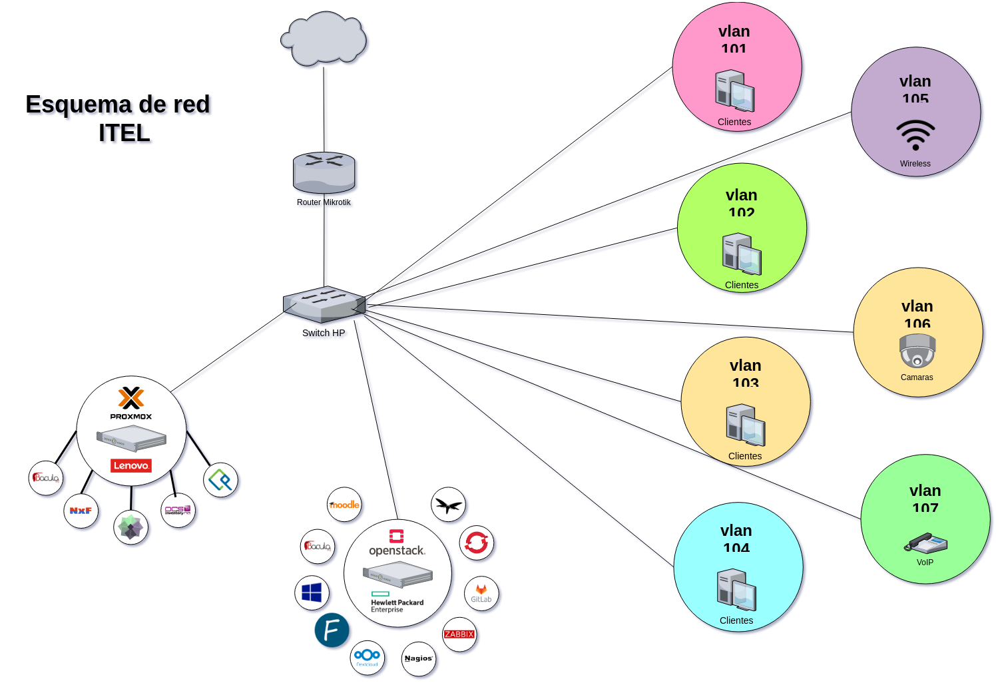

Herramientas de sotware¶
Listado de herramientas de software para desplegar y testear antes de su uso en producción en el instituto.

Gestión de equipos de trabajo¶
Documentación e inventario¶
Web Filters¶
Backup¶
Gestión de usuarios¶
Gestión de sistemas operativos¶
Gestión de servicios¶
- Admin4
- AegiProject
- Ajenti
- ApacheGUI
- AtomiaDNS
- Cockpit
- FacileManager
- Froxlor
- ProBIND
- Sentora
- Vesta
- Webmin
Nube privada¶
Base de conocimiento¶
Red social¶
HelpDesk¶
Mensajería¶
DevOps¶
Monitoreo¶
- Alerta
- Cabot
- Cacti
- Checkmk
- Cicada
- Centreon
- EyesOfNetwork
- Graphite
- LibreNMS
- NAV
- Monit
- Monitorix
- Munin
- Nagios
- Netdata
- Netxms
- OpenNMS
- PandoraFMS
- PHP Server Monitor
- phpSysInfo
- Smokeping
- Zabbix